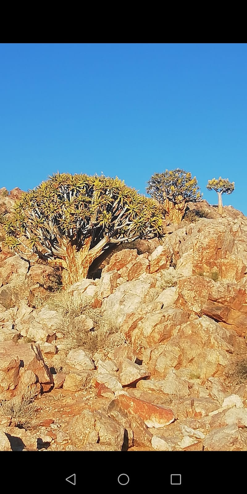

If I were a tree,
somewhere in a desert,
or in a rift of rock
finding growth,
I would flee in thought
to the shepherd Moses
and the burning bush,
ever aglow;
and as I dare to gaze
beyond the physical shape
of that tree,
arranging in my mind's eye,
to see the unquenchable fire of being—
furious through the ages,
defying the harshest climate,
with gnarled roots still anchored deep—
to then burst forth, when the season comes,
in an expression of pure joy—
just to be,
for no one to see
or appreciate,
simply to proclaim:
I Am!
And I, ...
must remove the shoes from my feet,
on this sacred ground where I may only stand in silence—
a stutterer with no words to clear,
in the presence of that which is eternal.